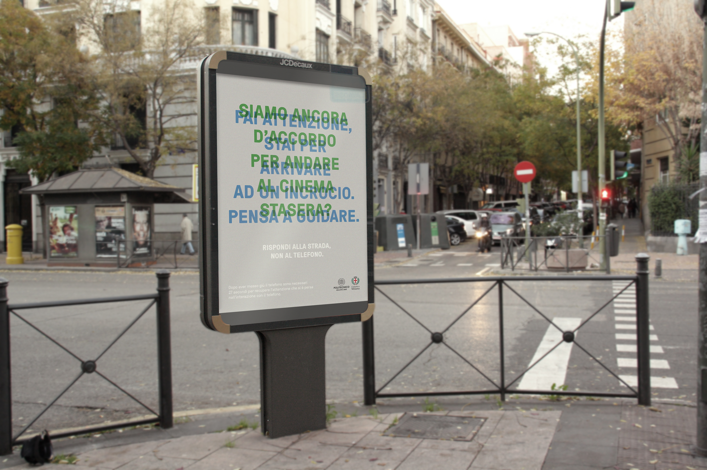
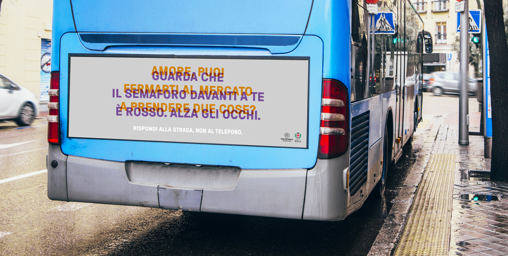
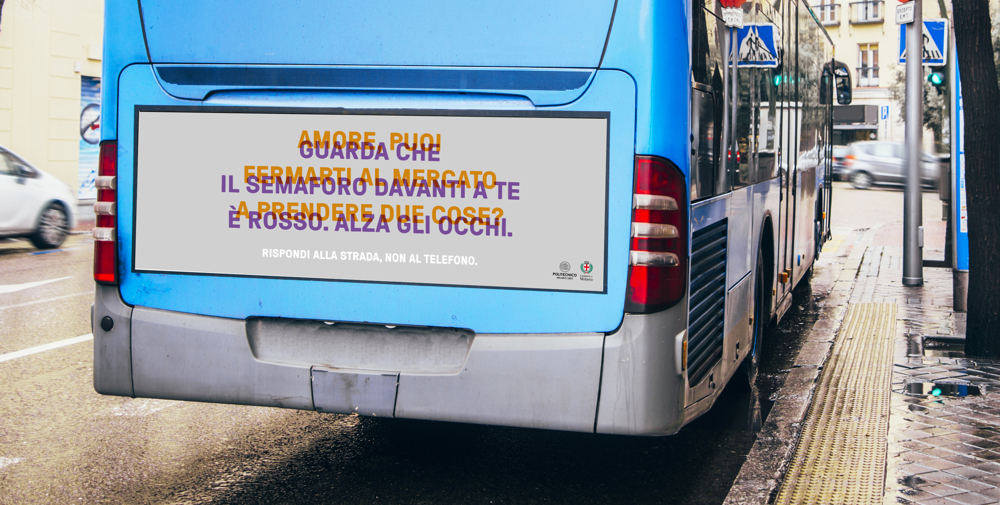
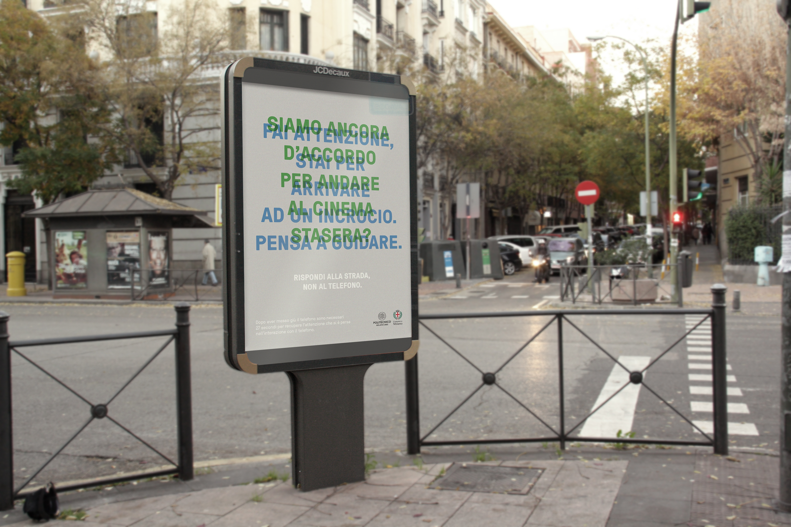
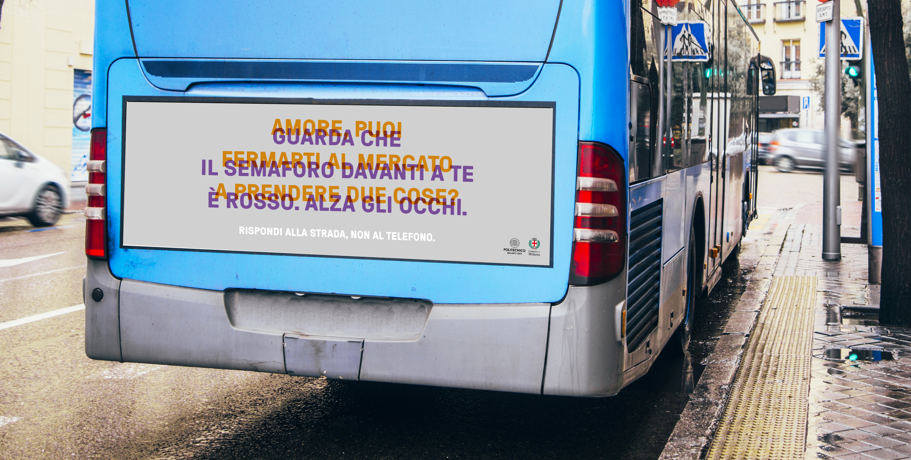

Video pubblicità progresso "Rispondi alla strada. Non al telefono."
 

Applicazione della cartellonistica pensata come parte della campagna
Video pubblicità progresso "Rispondi alla strada. Non al telefono."


Applicazione della cartellonistica pensata come parte della campagna
Pubblicità progresso
Rispondi alla strada. Non al telefono.
Il laboratorio ha visto la collaborazione con la Polizia Locale di Milano volta a ideare una pubblicità progresso per disincentivare l'uso del telefono alla guida.
Al seguito di un'analisi del committente e del target a cui ci si voleva rivolgere, è stato ideato, e quindi realizzato, un video che si chiude con l'avvertimento "Nella vita vera non puoi tornare indietro. Rispondi alla strada, non al telefono".
Lo stesso claim è stato ripreso anche nella cartellonistica parte della campagna, pensata per rappresentare visivamente gli effetti della distrazione.
Laboratorio di Progetto della Comunicazione Visiva
Proff. L. Bellavita, L. Carbone, M. Galbiati
A.A. 2018/2019
Progetto di:
Marta Sironi, Matilde Balestri, Sara Davì, Tea Firmo,
Judite Gariso, Mai Yuxin